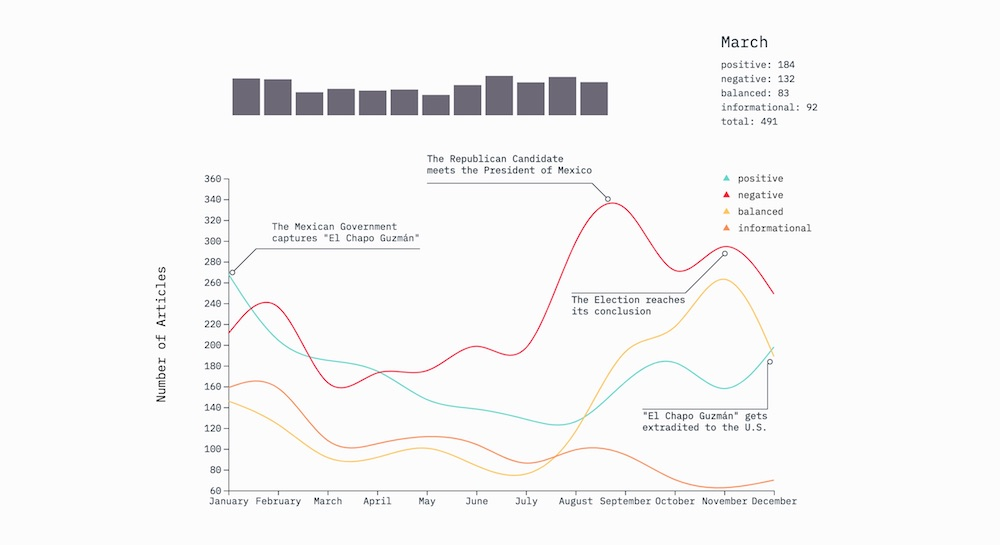
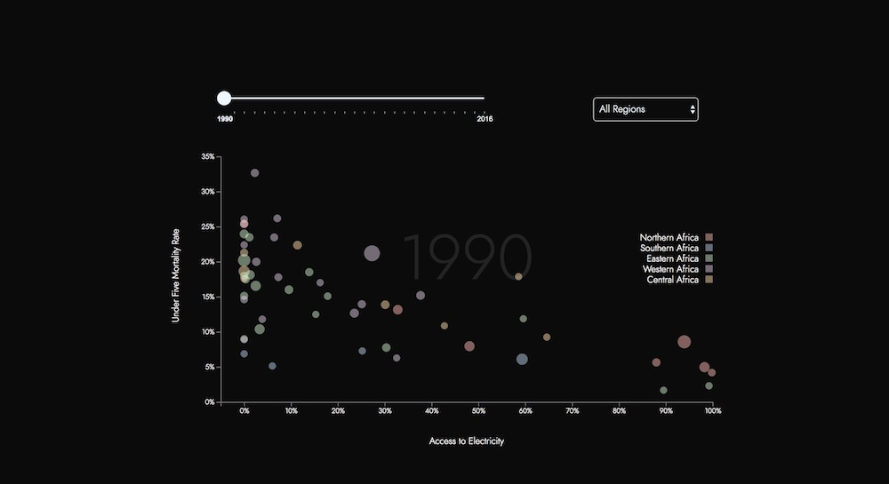
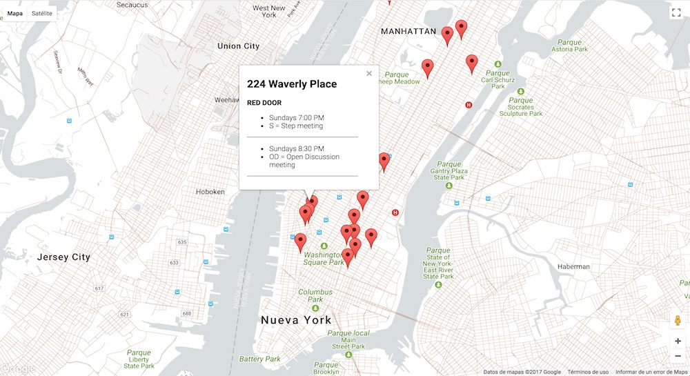
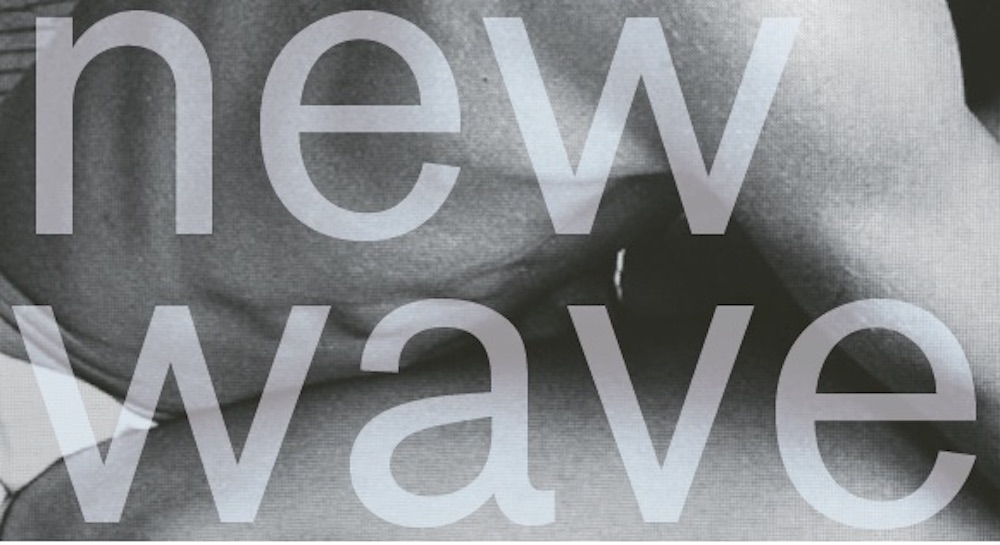

I'm a data visualization engineer and designer with a background in
international relations and sociology. My perpetual curiosity led me
to New York where I completed a masters in Data Visualization from
Parsons School of Design. I relish the process of uncovering hidden
stories buried in data through the use of digital technologies and
graphics.
Check out my full cv and let's get
in touch!
Recent Work

A Year in News – Mexico Through the Lens of U.S. Media
For my final project I explored the behavior of the U.S. media at
a historical turning point in the bilateral relations between the
U.S. and Mexico. The project is based on data gathered by the team
of international media analysts of former Mexican President,
Enrique Peña Nieto, it encompasses 67 media outlets and over 7,000
articles.

UNDP Africa – Parsons School of Design
This work explores the relationship between access to electricity,
clean cooking technologies, and under five morality rate in
Africa. It was made possible thanks to the ongoing partnership
between the UNDP Regional Bureau for Africa and the MS Data
Visualization Program at Parsons School of Design.

Scraping, Restructuring, and Mapping Data
This project was part of our Data Structures course. I
scraped
10
websites
using Node.js, stored the resulting
JSON
objects in a Mongo database and populated a map with the
information of all AA meetings in Manhattan. The project was
hosted on a EC2 instance provided by AWS (Amazon Web Services).

Typography and Visual Design
A design that works as a 22x33 inch poster and a small brochure
when folded down. This is part of my work for our Typography and
Visual Design course.
{kind=link}